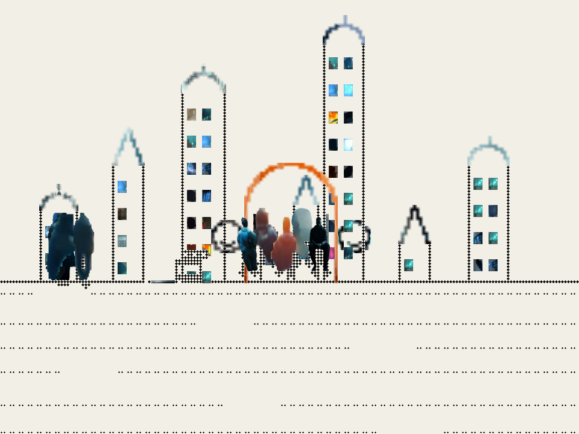
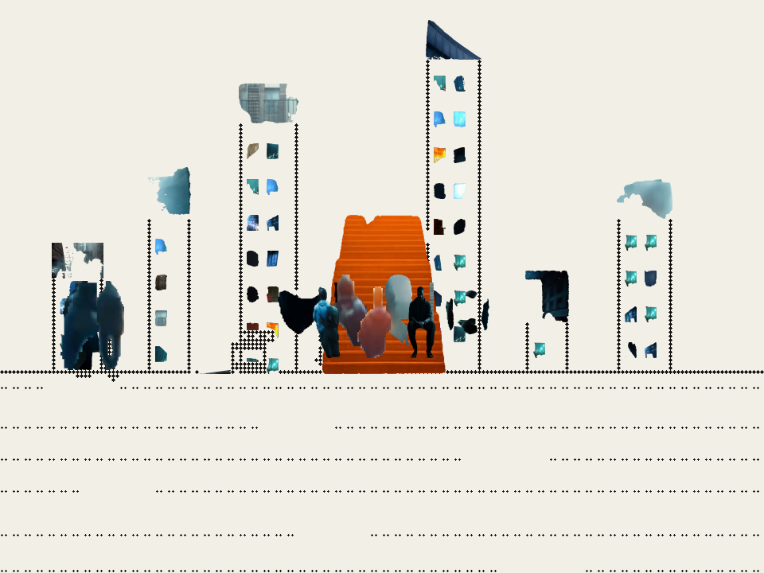
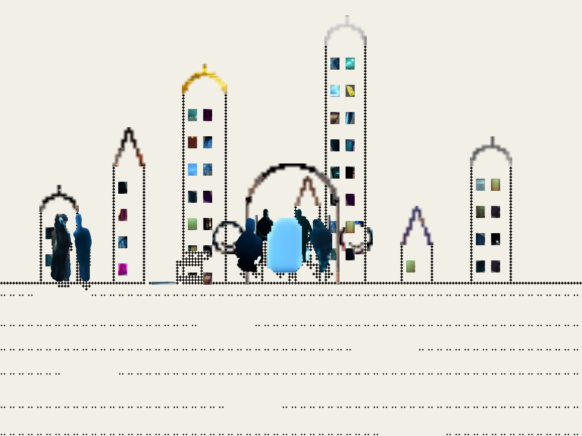
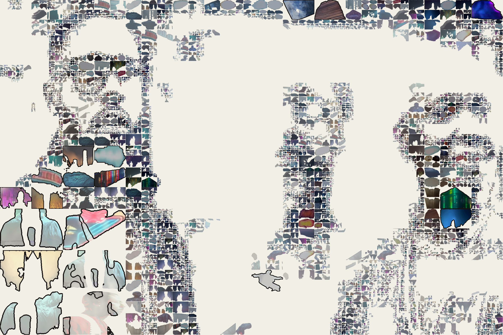

Three small studies that each answered one question: can a shot be quilted, can two parts be swapped, can a piece be fitted to a limb.
The swap is in cut/out/partswap, the fit in cut/out/bind.
4 FILES · 3.3 MB



